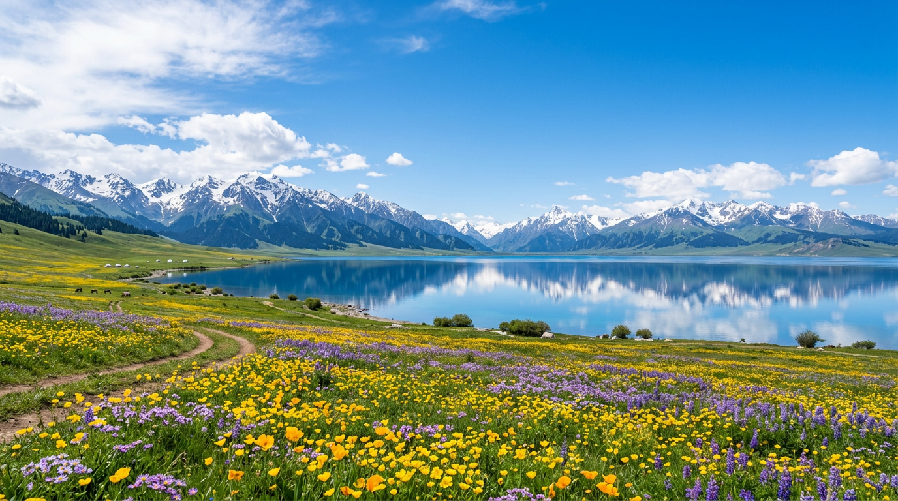

车已租，两台GL8；
取车 2026-08-02 09:00 新疆国际大巴扎服务点
还车 2026-08-10 09:00 新疆国际大巴扎服务点
¥6247 * 2
8/1乌鲁木齐集结 → 8/10乌鲁木齐返程 · 全程约 3,095 公里 · 全程两辆别克GL8自驾 · 10大人2小孩
北疆段：8/1直飞乌鲁木齐后各自办理入住自由活动 → Day2早餐后集结、神州租车·新疆国际大巴扎服务点 取车验车加油，长途660km赶往阿勒泰 → Day3走"神级"阿禾公路直插禾木木屋村、傍晚回撤住喀纳斯门户贾登峪 → 次日一早从门口进喀纳斯游三湾观鱼台、当天下山赶布尔津看五彩滩日落 → 克拉玛依（途经乌尔禾魔鬼城）→ Day6克拉玛依长途450km游赛里木湖、再北上温泉县泡温泉，全程两辆别克GL8结伴同行，Day2/Day6为两大长途驾驶日； 伊犁段：温泉县泡晨汤后重返赛里木湖晨光深度环湖（凭前一日门票24h内再入）→ 南下特克斯八卦城 → 喀拉峻人体草原，晚餐后登八卦观光塔看亮灯夜景 → 途经那拉提草原（不进景区）走独库中段至巴音布鲁克，傍晚看九曲十八弯日落 → 独库中段+北段翻天山至独山子 → 乌鲁木齐还车后分头返程。
10天满档，标红⚠️的节点最紧，全程自驾，仍需留足提前量
北疆伊犁必吃6大美味 · 从大盘鸡到手抓饭，每一口都是丝路味道
10大2小团队出行 · 北疆森林湖泊 + 两大长途驾驶日 + 独库公路预约通行 三段注意事项全覆盖